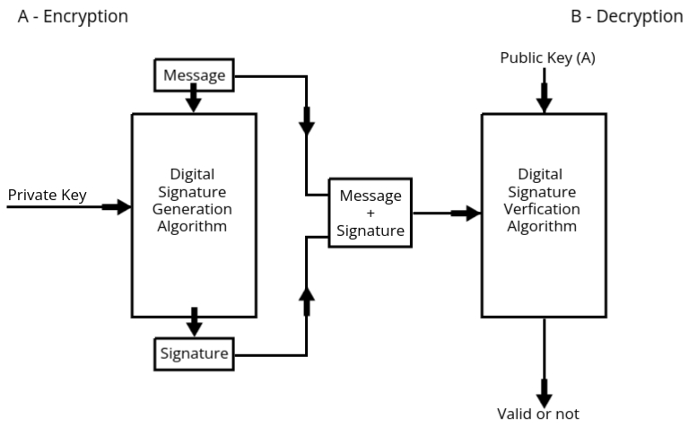

Hash Function
Hash functions are fundamental building blocks in modern cryptography, playing a pivotal role in ensuring
data security, integrity, and authentication across various digital systems. A hash function is a
mathematical algorithm that takes an input, such as a message or file, and produces a fixed-length string of
characters, known as a hash value or digest. This output is unique to the input data; even the slightest
change in the input results in a completely different hash. This property makes hash functions essential for
detecting unauthorized modifications to data, as any tampering becomes immediately apparent through a
mismatch in hash values.
This topic is divided into several important areas for a deeper understanding:
- Message Authentication & Hash Functions: This section focuses on how hash functions are
used to verify the authenticity and integrity of messages, ensuring that they come from a legitimate
source and have not been altered in transit.
- Authentication Requirements: These outline the basic principles needed to establish trust in
communication systems. The primary goals include verifying the sender’s identity, ensuring the
message's content remains intact, and preventing unauthorized access or alterations.
- Authentication Functions: These are specific techniques used to meet authentication
requirements. They often rely on cryptographic methods to ensure that the communication remains
secure and trustworthy.
- Message Authentication Codes (MACs): A MAC is a cryptographic tool that combines a secret key
with the message to generate a code. This code ensures that both the sender and recipient can
verify the message’s authenticity and integrity, as only they possess the key required to
generate or verify the MAC.
- Hash Functions: These are algorithms that provide a unique fingerprint for data. Hash functions
are widely used in systems where data integrity is critical, such as verifying file downloads,
securing passwords, and blockchain technology.
- Security of Hash Functions and MACs: This subtopic addresses potential vulnerabilities in hash
functions and MACs, such as collision attacks (when two different inputs produce the same hash)
and key management issues. It also explores strategies to enhance their robustness against such
threats.
- Specific Hash Algorithms: Two widely recognized hash algorithms are discussed in
detail:
- MD-5 (Message Digest Algorithm 5): This algorithm was once a popular choice for creating 128-bit
hash values. It played a significant role in the early days of cryptography by offering a fast
and efficient way to generate digests. However, its use has significantly declined due to
vulnerabilities, such as susceptibility to collision attacks, making it unsuitable for
high-security applications today.
- Secure Hash Algorithm (SHA-512): A member of the Secure Hash Algorithm family, SHA-512 generates
a 512-bit hash value, offering a much higher level of security compared to older algorithms like
MD-5. It is widely adopted in modern cryptographic applications, including SSL/TLS certificates,
blockchain systems, and digital signatures, where robust data protection is critical.
- Digital Signatures:
Digital signatures are advanced cryptographic tools used to verify the authenticity and integrity of
messages or digital documents. They are the digital equivalent of handwritten signatures, providing a
secure method for validating the identity of the sender and the originality of the data.
- Digital Signature Standard (DSS): This standard defines the framework for implementing secure
digital signature schemes, ensuring consistency and reliability across different systems. It
forms the basis for many digital signature protocols used today.
- Authentication Protocol: This refers to the specific steps and procedures involved in using
digital signatures to validate the identity of a sender during communication. Authentication
protocols are critical in scenarios like secure email communication, online transactions, and
digital contract signing.
- Digital Signature Algorithm (DSA): DSA is a widely used cryptographic algorithm for creating
digital signatures. It ensures that the signature is unique to the message and can be verified
by the recipient without compromising security. DSA plays a crucial role in maintaining trust in
digital interactions.
Message Authentication
- Message Authentication ka Matlab: Jab ek message receive hota hai, toh humein yeh
ensure karna hota hai ki yeh asli sender ne bheja hai aur beech mein message ke content ke saath koi
chedh-chaad nahi hui hai. Yaani, sender ki identity aur message ki integrity dono verify karni hoti
hai.
- Ek Practical Scenario: Sochiye aap Organization XYZ ke ek employee hain aur aapko
Organization ABC se ek confidential message milta hai. Is situation mein aapko confirm karna hoga ki
yeh message ABC ke genuine person ne bheja hai aur transmission ke dauraan kisi third-party ne isse
modify nahi kiya.
- Importance of Message Authentication: Sensitive information ko unauthorized access
aur tampering se bachane ke liye yeh bahut zaroori hai. Agar message authentication na ho, toh
attackers confidential data ko manipulate ya fake messages forward kar sakte hain, jo bahut bade
security risks create karta hai.
- Authentication Kaise Hota Hai? Yeh ek authenticator ke zariye kiya jaata hai.
Authenticator basically ek code ya string hota hai jo message ke saath attach hota hai. Yeh
authenticator kuch bhi ho sakta hai, jaise:
- Ek numerical code
- Ek hash value
- Ek alphabetic string
- Ya ek alphanumeric code
Authenticator ka kaam hai message ki integrity aur sender ki authenticity ensure karna.
- Authentication Functions: Yeh authenticators ek specific process ya function ke
zariye generate hote hain, jo message ko protect karte hain. In functions ka main goal hota hai data
integrity aur authenticity ko preserve karna. Teen primary authentication functions hote hain:
-
Message Encryption:
Is technique mein pura message ko encrypt kiya jaata hai, taaki koi unauthorized person isse
samajh na sake. Encryption ensure karta hai ki message sirf intended receiver hi decode kar
sake. Yeh dono sender aur receiver ki identity ko bhi secure karta hai.
-
Message Authentication Code (MAC):
MAC ek special code hota hai jo message ke content ke saath attach hota hai. Receiver is
code ko verify karke confirm karta hai ki message tampered nahi hua hai. Yeh ek symmetric
key-based mechanism hota hai, yaani dono sender aur receiver ke paas ek shared secret key
hoti hai.
-
Hash Functions (H):
Hash function ek mathematical operation hai jo message ko ek fixed-size hash value mein
convert karta hai. Agar message mein ek bhi chhoti si change hoti hai, toh hash value
completely change ho jaati hai. Isse aap easily detect kar sakte hain ki message tampered
hua hai ya nahi. Yeh ek popular method hai kyunki yeh fast aur efficient hota hai.
Message Encryption
- Encryption is the process of converting plaintext into ciphertext using an encryption algorithm
and a secret key.
- In the context of message authentication, the encrypted message (ciphertext) serves as proof of
authenticity, as only the intended recipient (who has the decryption key) can read the message.
- This method ensures that even if the message is intercepted, an attacker cannot read it without
the decryption key, which can be used as an authenticator.
- However, message encryption alone does not verify the source of the message, which is why
additional methods like MAC and hash functions are used for complete message authentication.
Message Authentication Code (MAC)
- A Message Authentication Code (MAC) is a fixed-length code generated by an authentication
function, which takes the message and a secret key as inputs.
- The MAC ensures both the integrity and authenticity of the message. If the message changes
during transmission, the MAC will not match when verified by the recipient.
- The formula for a MAC is as follows:
C(MK) = MAC, where:
- C represents the authentication function.
- M is the message being sent.
- K is the secret key shared between the sender and receiver.
- The output (o/p) is the MAC code, which acts as a "signature" for the
message.
- MACs are commonly used in various security protocols like SSL/TLS to verify the authenticity and
integrity of transmitted messages.
Hash Functions (H)
- Hash functions are similar to MACs but do not use a secret key. Instead, they take the message
and produce a fixed-length hash code.
- The output of a hash function is typically referred to as the hash value or hash code.
- The formula for a hash function is as follows:
H(M) = h, where:
- H represents the hash function.
- M is the message being sent.
- h is the resulting hash code, a fixed-length string representing the
message.
- The hash code serves as a fingerprint for the message. Even a small change in the message will
result in a completely different hash code, making it easy to detect any tampering.
- Hash functions are widely used in digital signatures, blockchain technologies, and various
security protocols to ensure data integrity.
Comparison of Authentication Functions
- Message Encryption provides confidentiality but does not authenticate the
sender. It ensures that only the intended recipient can read the message.
- MAC offers both authenticity and integrity. It ensures that the message has not
been altered and that it was sent by the claimed sender, provided the secret key remains secure.
- Hash Functions ensure message integrity by producing a unique hash value for a
given message. They cannot verify the sender's identity unless combined with digital signatures
or other forms of authentication.
Hash Algorithms
MD-5 (Message Digest Algorithm 5)
-
MD5 ek widely used cryptographic hash function hai jo ek 128-bit (16-byte) hash value produce karta hai. Yeh primarily data integrity verify karne ke liye aur checksums generate karne ke liye use hota hai. Hash function ek mathematical process hai jo kisi input data (message, file, etc.) ko ek fixed-size output mein convert karta hai. MD5 ka output hamesha 128-bit hota hai, chahe input ka size kuch bhi ho.
Example: Agar aap "Hello" ko MD5 ke through pass karenge, toh aapko ek unique 32-character hexadecimal string milegi.
-
MD5 ko 1991 mein Ron Rivest ne develop kiya tha, aur yeh purane hash functions jaise MD4 ke comparison mein behtar aur fast tha. Fast hone ki wajah se, yeh un applications ke liye ideal hai jahan quick hashing ki zarurat hoti hai. Lekin, iska 128-bit message digest aaj ke standards ke comparison mein chhota ho sakta hai.
-
MD5 ka major use file integrity check karna aur data verify karna hai. Jab aap koi file download karte hain, toh aap uske saath MD5 checksum bhi dekh sakte hain, jo aapko yeh verify karne mein madad karta hai ki file mein koi tampering nahi hui hai. Agar file ko modify kiya jaye, toh checksum change ho jata hai, aur yeh tampering ko detect karne mein madad karta hai.
-
MD5 ab secure nahi mana jata, especially collision attacks ke against. Collision attack ek aisi situation hoti hai jahan do alag-alag inputs same hash produce karte hain. Yeh dangerous ho sakta hai kyunki attacker kisi fake data ko original data ke jaise bana sakta hai, jo MD5 hash ke basis par match karega. Isliye MD5 ko critical aur sensitive applications mein use nahi kiya jata.
-
Halanki MD5 abhi bhi kuch basic hashing tasks mein use hota hai, lekin security ke high standards ke liye yeh recommended nahi hai. Aaj bhi file integrity checks aur quick hashing tasks ke liye MD5 ka use hota hai, lekin secure encryption aur password storage mein iska use nahi hota.
Working Steps:
-
Padding the Message:
Sabse pehle, message ko MD5 ke processing requirements ke hisaab se adjust kiya jata hai. Iska matlab hai ki message ki length ko 512 bits ka multiple banane ke liye extra bits (padding) add ki jati hain. Lekin, last ke 64 bits agle step ke liye reserve hote hain. Yeh ensure karta hai ki MD5 message ko sahi tarike se process kar sake.
Example: Agar aapka message 400 bits ka hai, toh extra padding add karke usse 512 bits ka banaya jayega.
-
Adding the Original Length:
Padding ke baad, message ki original length (padding ke pehle ki) ko message ke end mein 64-bit binary format mein add kiya jata hai. Yeh MD5 ko actual input ki length ka record rakhne mein madad karta hai.
Example: Agar original message 400 bits ka tha, toh yeh value as 64-bit binary format ke roop mein add ki jayegi.
-
Breaking into 512-bit Blocks:
Ab padded message (original length ke saath) ko 512-bit ke chunks mein tod diya jata hai. Har chunk ek block ke roop mein treat hota hai aur sequentially process hota hai.
Example: Agar message 1024 bits ka ban gaya hai, toh yeh 2 blocks mein divide hoga.
-
Setting Up Variables:
MD5 kuch predefined variables (A, B, C, D) ka use karta hai jo intermediate results ko store karte hain. In variables ko ek specific initial value se shuru kiya jata hai, aur processing ke dauraan update kiya jata hai.
Tip: Yeh variables basically mathematical calculations ke base points hain.
-
Processing Each Block:
Har 512-bit block ko process karne ke liye yeh steps follow hote hain:
- Block ko 16 chhoti pieces (32 bits har ek) mein tod diya jata hai.
- Phir block 4 rounds ki calculations se guzarata hai, jo data ko mix aur transform karte hain mathematical aur logical operations ke zariye.
- Har block ke process hone ke baad, results ko A, B, C, aur D ke initial values mein add karke update kiya jata hai, taaki agle block ke liye ready ho.
Example: Har round data ko transform karke ek naye form mein le jata hai, jo hash ke final output mein contribute karta hai.
-
Producing the Final Hash:
Jab saare blocks process ho jate hain, toh A, B, C, aur D ke final values ko combine karke ek 128-bit ka hash banaya jata hai. Is hash ko phir ek 32-character hexadecimal string ke form mein represent kiya jata hai.
Key Takeaway: MD5 hash ek digital fingerprint ki tarah hota hai. Agar input mein chhoti si bhi change hoti hai, toh hash completely alag hoga. Is wajah se yeh verification ke liye secure aur unique hota hai.
Example: "hello" aur "Hello" ka MD5 hash completely different hoga.
SHA (Secure Hash Algorithm)
- MD5 ka Modified Version: SHA, MD5 algorithm ka ek improved version hai, jo MD5 ke vulnerabilities ko address karne aur zyada security dene ke liye design kiya gaya hai. MD5 ke kuch weaknesses jaise collision attacks ko dhyan mein rakhte hue, SHA ko is tarah se develop kiya gaya hai ki woh zyada secure aur reliable ho. Jab MD5 ko collision attacks ke against safe nahi mana gaya, tab SHA ka use badh gaya tha.
- Output Length: MD5 ke comparison mein, jo sirf 128-bit output deta hai, SHA 160-bit output produce karta hai. Iska matlab hai ki SHA ka hash aur zyada complex hota hai aur usse reverse-engineer karna mushkil hota hai. Zyada bits hone ki wajah se, sha256 (SHA ka ek version) aur sha512 jese aur secure variants bhi exist karte hain jo aur zyada bits produce karte hain, aur inka use highly sensitive data ke liye hota hai.
Working Steps
-
Padding the Message:
Padding ko message mein add kiya jaata hai taaki message ka length 512 ke multiple ban sake. Yeh "1" bit add karke start hota hai, phir enough "0" bits add kiye jaate hain taaki total length required multiple tak pahunch sake.
-
Adding the Original Length:
Original message ka length (jo padding ke pehle tha) ko 64-bit ke format mein message ke end mein add kiya jaata hai. Yeh ensure karta hai ki final message ka length bilkul 512 bits ke multiple ho.
-
Dividing the Message into 512-bit Blocks:
Padding ke baad message ko 512-bit blocks mein divide kar diya jaata hai. Har ek block ko separately process kiya jaata hai during hashing.
-
Initializing Chaining Variables:
SHA algorithm five 32-bit variables ka use karta hai (A, B, C, D, aur E), jo calculation ko track karte hain. Yeh variables specific starting values se initialize hote hain.
-
Processing Each Block:
Har 512-bit block ko process karne ke liye yeh steps follow kiye jaate hain:
- Copy Variables: A, B, C, D, aur E ki current values ko temporary variables (a, b, c, d, e) mein copy kiya jaata hai.
- Divide into Words: Block ko 16 chhote 32-bit pieces (W₀ se W₁₅) mein divide kiya jaata hai. Phir aur zyada words (W₁₆ se W₇₉) generate kiye jaate hain initial words par operations kar ke.
- Perform Four Rounds: Har block pe 4 rounds hoti hain, har round mein 20 steps hote hain. Har round mein different functions, constants aur variables modify kiye jaate hain:
- Round 1: Basic logical operations jaise AND, OR, NOT.
- Round 2: Complex operations jaise XOR perform kiye jaate hain.
- Round 3: Data ko aur mix karne ke liye transformations hoti hain.
- Round 4: Final operations jisse data achhe se mix ho jaata hai.
- Update Variables: Jab block process ho jaata hai, temporary variables (a, b, c, d, e) ko original variables (A, B, C, D, E) mein add kar liya jaata hai, changes incorporate karte hue.
-
Final Output:
Jab saare blocks process ho jaate hain, to A, B, C, D, aur E ke final values ko concatenate karke final 160-bit hash generate kiya jaata hai. Yeh hash typically 40-character hexadecimal string ke form mein represent hota hai, jo original message ka unique identifier ban jaata hai.
Digital Signature
- Real-World Relevance: Many of us are familiar with the concept of digital
signatures, as we often use them in secure digital transactions, document signing, and
authentication processes.
- Based on Asymmetric Key Cryptography: Digital signatures utilize asymmetric key
cryptography, involving a pair of keys: a private key (kept secret) and a public key (shared
publicly).
- Encryption and Decryption:
- Encryption: The private key is used to sign the message, creating the
digital signature.
- Decryption: The public key is used to verify the signature and validate the
authenticity of the message.
- Primary Uses: Digital signatures serve two main purposes:
- Authentication: Ensures the message is from the intended sender.
- Non-Repudiation: Prevents the sender from denying the authenticity of the
signed message.
- Signature: Acts as proof of identity, verifying whether the message genuinely
originated from the claimed sender.
Working of Digital Signature

- Sender's End (Encryption):
- The sender (User A) uses their private key to encrypt the message. This
private key is unique to the sender and remains confidential.
- The message and private key are passed through a Digital Signature Generation
Algorithm, which produces the digital signature.
- The generated digital signature is then combined with the original message, creating a
package containing both.
- This package (message + signature) is sent to the receiver (User B).
- Receiver's End (Decryption):
- The receiver uses the sender's public key to decrypt and verify the
digital signature.
- The package (message + signature) is passed through a Digital Signature
Verification Algorithm, along with the sender's public key.
- The algorithm compares the received message with the digital signature to verify its
validity:
- If the message matches the signature: The algorithm outputs
Valid, confirming the sender's authenticity and message
integrity.
- If the message does not match the signature: The algorithm outputs Not
Valid, indicating potential tampering or authenticity issues.
Digital Signature Standard (DSS)
- Definition: The Digital Signature Standard (DSS) is a Federal Information
Processing Standard (FIPS) specifying algorithms for digital signature generation and
verification, primarily for ensuring data authenticity and integrity.
- Established By: National Institute of Standards and Technology (NIST).
- First Published: 1994 as FIPS PUB 186.
- Purpose: Provides a secure method for digital signatures using public-key
cryptography to authenticate the origin and integrity of digital data.
Key Features of DSS
- Algorithm: DSS defines the Digital Signature Algorithm (DSA) as its core
mechanism for generating and verifying digital signatures.
- Ensures signatures are unique for each document, preventing forgery.
- Does not encrypt data, only authenticates and verifies its integrity.
- Uses hash functions (e.g., SHA-1, SHA-256) to generate a message digest.
- Works with public-key cryptography, involving a pair of private and public keys.
Working of DSS
- Key Generation:
- Generate a private key (x) and compute the corresponding public key
(y).
- These keys are derived using the DSA algorithm parameters, including a prime number
(p), a subprime (q), and a generator (g).
- Signature Generation:
- Hash the message to produce a fixed-length message digest.
- Generate a random integer (k) and calculate two values:
- r = (gk mod p) mod q.
- s = (k-1 (H(m) + xr)) mod q, where
H(m) is the message hash.
- The signature is the pair (r, s).
- Signature Verification:
- Receiver uses the sender’s public key to verify the signature:
- Calculate the hash of the received message.
- Compute:
- w = s-1 mod q.
- u1 = (H(m)w) mod q, u2 =
(rw) mod q.
- v = (gu1 * yu2 mod p) mod
q.
- If v equals r, the signature is valid.
Advantages of DSS
- Ensures data authenticity and integrity without encrypting the data.
- Relies on well-established mathematical principles for security.
- Efficient for signing and verifying large amounts of data.
Applications of DSS
- Used in secure email systems (e.g., S/MIME, PGP).
- Verifies authenticity in software distribution and updates.
- Commonly used in Public Key Infrastructure (PKI) systems for certificates.
- Ensures secure communications in blockchain and financial transactions.
Authentication Protocol
- Definition: A set of rules and processes used to verify the identity of
entities (users, systems, or devices) communicating in a network.
- Purpose: Ensures secure access and communication by confirming the legitimacy
of the participating entities.
- Key Features:
- Prevents unauthorized access.
- Guards against impersonation and replay attacks.
- Maintains confidentiality and integrity of communication.
Types of Authentication Protocols
- Password-Based:
- Relies on shared passwords or passphrases.
- Vulnerable to dictionary attacks and password theft.
- Challenge-Response Protocol:
- Uses a challenge (e.g., random number) and a secret key to verify identity.
- Prevents replay attacks as each session has a unique challenge.
- Token-Based:
- Utilizes physical or digital tokens for authentication.
- Examples: OTP (One-Time Password) tokens, smart cards.
- Biometric-Based:
- Involves unique biological traits (e.g., fingerprints, retina scans).
- Provides strong security but can be costly to implement.
Examples of Authentication Protocols
- Kerberos: A network authentication protocol using secret-key cryptography
and a trusted third party for secure communication.
- OAuth: A protocol for token-based authentication in web applications,
allowing third-party access without sharing credentials.
- SSL/TLS Handshake: Verifies the server and optionally the client during
secure web connections.
- RADIUS: Centralized authentication and authorization protocol for network
access.
Digital Signature Algorithm (DSA)
- Definition: A Federal Information Processing Standard (FIPS) for digital
signatures, introduced by the National Institute of Standards and Technology (NIST) in 1991.
- Purpose: Ensures data authenticity and integrity by providing a secure digital
signature mechanism.
- Based On: Public key cryptography and modular arithmetic, similar to the
discrete logarithm problem.
Key Features of DSA
- Used exclusively for generating and verifying digital signatures, not for encrypting data.
- Generates a pair of keys: private key (used for signing) and public key (used for
verification).
- Produces a unique signature for every message, even if the same private key is used.
- Relies on mathematical properties to ensure security and prevent forgery.
Working of DSA
- Key Generation:
- Choose a prime number p and a number q (a prime divisor of
p-1).
- Generate a number g, a generator of the subgroup of p.
- Generate private key x (random number less than q).
- Compute public key y = g^x mod p.
- Signing Process:
- Generate a random integer k (less than q).
- Compute r = (g^k mod p) mod q.
- Compute s = (k-1(H(m) + xr)) mod q, where H(m)
is the hash of the message.
- The digital signature is the pair (r, s).
- Verification Process:
- Receiver verifies the signature using the sender's public key (y).
- Compute two values:
- w = s-1 mod q.
- u1 = (H(m)w) mod q, u2 = (rw)
mod q.
- Compute v = (g^u1 * y^u2 mod p) mod q.
- If v = r, the signature is valid; otherwise, it is invalid.
Advantages of DSA
- Provides high security and ensures message integrity.
- Efficient in signature generation and verification processes.
- Widely used in applications requiring legal digital signatures (e.g., certificates).
Applications of DSA
- Used in secure email systems (e.g., PGP, S/MIME).
- Implemented in digital certificates and Public Key Infrastructure (PKI).
- Ensures authenticity in software distribution and updates.
- Used in blockchain systems for transaction validation.